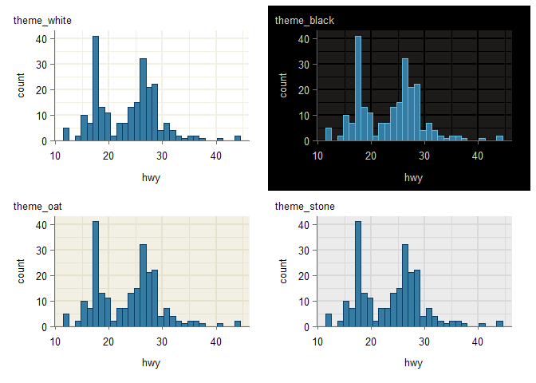
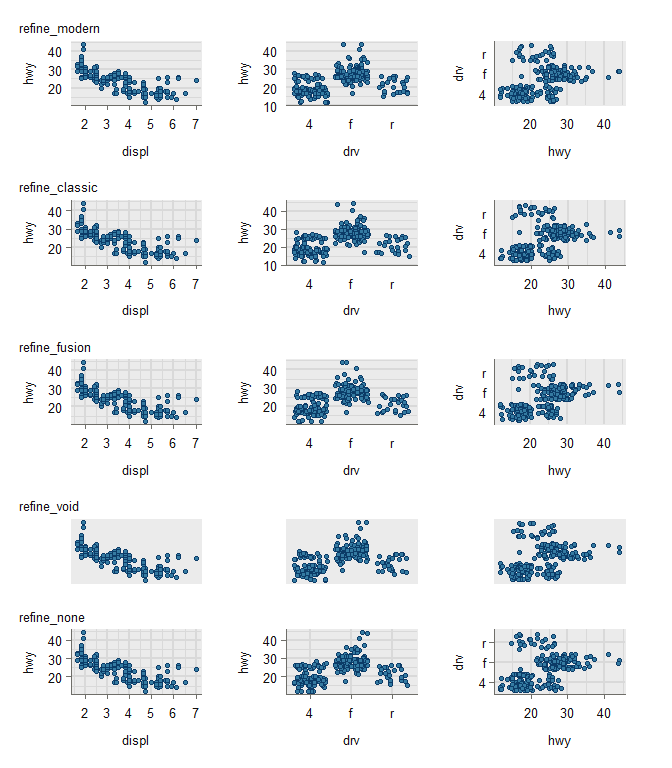

The objective of ggrefine is to provide some pretty ggplot2 complete themes, and refine functions to tweak these easily based on the particulars of a plot.
Installation
Install from CRAN, or development version from GitHub.
install.packages("ggrefine")
pak::pak("davidhodge931/ggrefine")Example
ggrefine provides a set of complete ggplot2 themes and functions to refine these based on the particulars of the plot.
library(ggplot2)
library(ggrefine)
p_light <- mpg |>
ggplot(aes(x = hwy)) +
geom_histogram(
stat = "bin", shape = 21,
colour = blends::multiply("#357BA2FF")
) +
scale_y_continuous(expand = expansion(mult = c(0, 0.05)))
p_dark <- mpg |>
ggplot(aes(x = hwy)) +
geom_histogram(
stat = "bin", shape = 21,
colour = blends::screen("#357BA2FF")
) +
scale_y_continuous(expand = expansion(mult = c(0, 0.05)))
p_white <- p_light + theme_white() + labs(title = "theme_white")
p_oat <- p_light + theme_oat() + labs(title = "theme_oat")
p_stone <- p_light + theme_stone() + labs(title = 'theme_stone')
p_black <- p_dark + theme_black() + labs(title = "theme_black")
patchwork::wrap_plots(
p_white,
p_black,
p_oat,
p_stone
)
The refine_* functions adjust gridlines and axis elements based on axis types (x_type and y_type), which default to "continuous".
set_theme(new = theme_stone())
p_continuous <- mpg |>
ggplot(aes(x = displ, y = hwy)) +
geom_point(shape = 21, colour = blends::multiply("#357BA2FF"))
p_discrete_x <- mpg |>
ggplot(aes(x = drv, y = hwy)) +
geom_jitter(shape = 21, colour = blends::multiply("#357BA2FF"))
p_discrete_y <- mpg |>
ggplot(aes(x = hwy, y = drv)) +
geom_jitter(shape = 21, colour = blends::multiply("#357BA2FF"))
patchwork::wrap_plots(
p_continuous + refine_modern() + labs(title = "refine_modern"),
p_discrete_x + refine_modern(x_type = "discrete"),
p_discrete_y + refine_modern(y_type = "discrete"),
p_continuous + refine_classic() + labs(title = "refine_classic"),
p_discrete_x + refine_classic(x_type = "discrete"),
p_discrete_y + refine_classic(y_type = "discrete"),
p_continuous + refine_fusion() + labs(title = "refine_fusion"),
p_discrete_x + refine_fusion(x_type = "discrete"),
p_discrete_y + refine_fusion(y_type = "discrete"),
p_continuous + refine_void() + labs(title = "refine_void"),
p_discrete_x + refine_void(x_type = "discrete"),
p_discrete_y + refine_void(y_type = "discrete"),
p_continuous + refine_none() + labs(title = "refine_none"),
p_discrete_x + refine_none(x_type = "discrete"),
p_discrete_y + refine_none(y_type = "discrete"),
ncol = 3
)